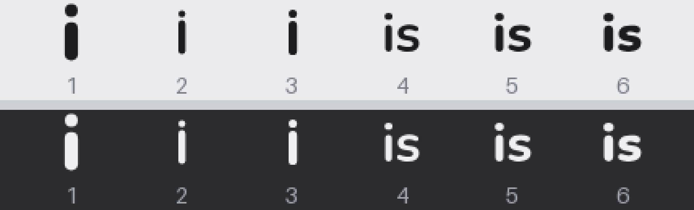
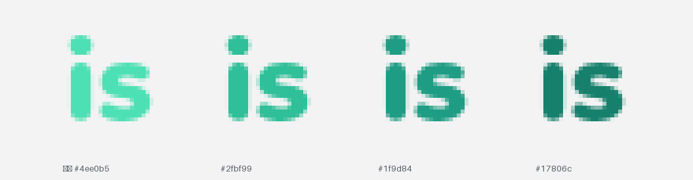
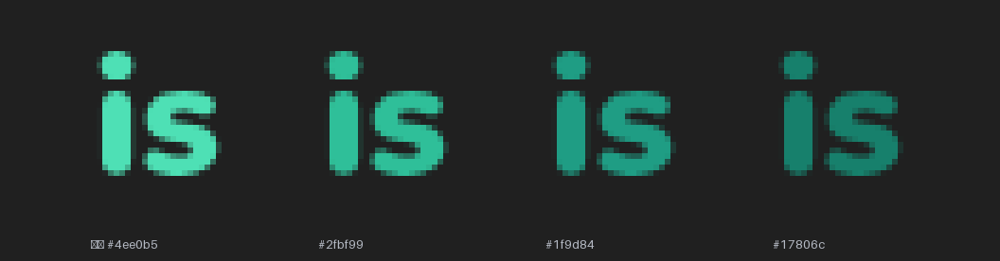

两个平台的问题不一样：macOS 是太粗太重，Windows 是在白任务栏上看不清。 下面是真尺寸渲染（菜单栏 18pt @2x，Windows 24px 放大 6 倍保留像素）。
| 问题 | 现状 |
|---|---|
| 笔画太重 | 笔宽 3.35pt，在 2x 屏上是 6.7 个像素。系统菜单栏图标一般是 1.2–1.8pt |
| 墨迹偏大 | 高度占到 13.9pt，和旁边系统图标的视觉重量对不上 |
| 宽度浪费 | 只有 i，右边留白很多；而这一项要占满 22pt 宽的槽位 |

| 问题 | 现状 |
|---|---|
| 浅色任务栏看不清 | #4ee0b5 对 #f3f3f3 只有 1.50:1 对比度，低于任何可读性下限 |
| 深色任务栏很好 | 同一颜色对 #202020 是 9.82:1 —— 所以这是「一边好一边差」 |

#2fbf99 2.10:1 · #1f9d84 3.05:1 · #17806c 4.36:1
菜单栏改用 6 号（is 900 字重，12pt 高）。 两个字比单个 i 更容易认，
而且菜单栏本来就是横向槽位，"is" 的 14.8pt 宽度正好用上；笔画细了之后不再糊成一团。
Windows 托盘改用 #1f9d84。 这是两条曲线交叉附近唯一两头都过得去的点：
浅色 3.05:1、深色 4.82:1，两个方向都是「肉眼清楚」的水平。这个色值也不是新造的，
控制面板里「已配对」「共用键鼠已开」用的就是它（--ok-text），所以托盘和面板是同一个绿。
is？
Windows 托盘现在已经是 is，只是颜色不对；macOS 菜单栏一直是单字 i。
如果两边统一成 is，用户看到的品牌符号就完全一致了 —— 但 macOS 菜单栏上多一个字，
每个像素都要和旁边的系统图标抢位置。我倾向：菜单栏也用 is，因为菜单栏图标本来就是横排的。
i，只是笔画从 3.35pt 收到 2.6pt），
改动最小，粗重的问题也能解决。